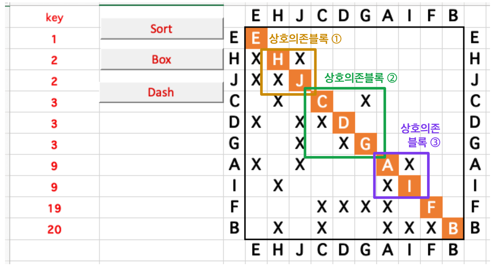
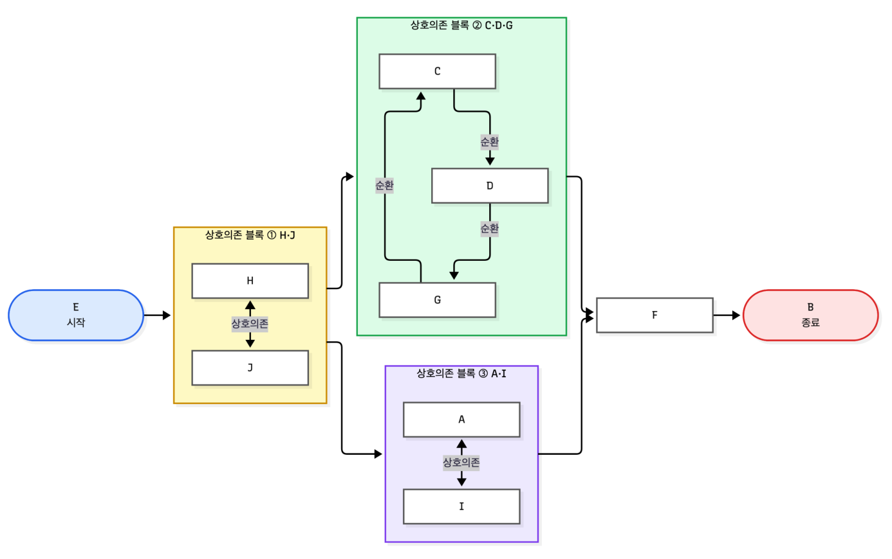

01 / 결과에서 시작하기 0:30–1:10
이 플로우차트,
어떻게 만들었을까요?
도형을 배치하지 않고, 텍스트로 만들었습니다.

제출 과제 v3 · p.4 일부

제출 과제 v3 · p.6 일부 · Claude + Mermaid 이용
Process DSM HW 김예나 · 아키텍처 혁신과 모노즈쿠리
02 / 텍스트 → 다이어그램 1:10–2:00
Mermaid =
텍스트로 그리는 다이어그램
요소와 관계를 적으면, 그림은 자동으로 배치됩니다.
flowchart LR
A[아이디어] --> B[검토]
B --> C[실행]A --> BA에서 B로 연결하기노드(node) + 관계(edge)플로우차트 · 시퀀스 다이어그램 · 간트 차트
03 / LIVE DEMO 2:00–4:15
텍스트를 바꾸면, 그림도 바뀝니다.
단계 버튼은 편집 내용을 준비된 코드로 바꿉니다. 순차 흐름부터 시작합니다.
렌더러를 준비합니다.
위치를 옮기는 대신, 관계를 바꿉니다.시연용 축약 그래프 · 원본 25개 관계의 전체 표현은 아닙니다.
04 / 다이어그램 종류 4:15–5:00
Mermaid로 이렇게 다양하게 그릴 수 있습니다.
관계의 모양에 맞는 문법을 고르면, 같은 도구로 구조·시간·경험을 모두 표현할 수 있습니다.
카드를 선택하면 큰 미리보기와 Mermaid 코드를 확인할 수 있습니다. 모든 미리보기는 로컬 Mermaid 번들로 렌더링됩니다.
05 / AI + Mermaid의 효과 5:00–5:40
AI가 초안을 만들고,
Mermaid가 구조를 짧게 전달합니다.
그림 전체를 다시 생성하는 대신, 관계를 담은 코드만 고치면 됩니다.
“A 다음에 B와 C가 병렬”
노드와 관계를 코드로 변환
짧은 코드가 그림이 됨
관계가 맞는지 확인
이미지나 SVG 대신 노드와 관계를 담은 텍스트만 주고받습니다.
전체 그림을 다시 만들지 않고 관계 한 줄을 바꿉니다.
AI는 초안과 문법을 돕고, 사람은 의미와 관계를 확인합니다.
06 / 실제 과제에서 내 업무로 5:40–6:20
같은 관계, 다른 표현 수준.
원본 Mermaid 소스 ↓ · v3 PDF p.6–7 대응
AI와 함께, 검증은 직접
작업과 관계 파악
Mermaid 문법으로 표현
코드 → 다이어그램
원본 대조 · 수정
AI나 Mermaid가 분석 결과의 정확성을 자동 보장하지 않습니다. 원본과 비교하고 수정하는 과정은 사람이 맡습니다.
07 / 활용과 마무리 6:20–7:00
오늘 기억했으면 하는 네 가지
- 01
Mermaid는 텍스트로
다이어그램을 만드는 도구다. - 02
생성형 AI와 함께 사용하면
문법을 몰라도 쉽게 시작할 수 있다. - 03
Mermaid 코드는 그림보다 짧고 수정하기 쉬워
AI와 구조를 주고받는 중간 표현으로 유용하다. - 04
중요한 것은 그림을 예쁘게 그리는 것이 아니라,
표현하려는 관계를 정확히 정의하는 것이다.